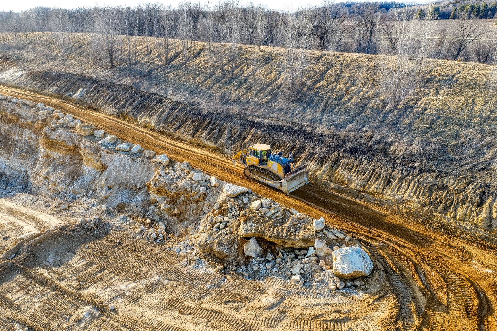

Different disciplines.
One standard of delivery.
Practical capability across infrastructure, construction and development.
Capabilities that
build forward.
Our services are shaped by on-ground understanding, project coordination and a commitment to quality across every stage.

Mining & Quarry Operations
Mining and quarry operations built around disciplined site management, dependable equipment and a clear focus on productivity.
Explore capability ↗
Infrastructure Projects
Infrastructure works that bring together planning, coordination and on-ground execution to create durable connections and essential assets.
Explore capability ↗
Villa Projects
Residential development with considered planning, construction quality and a focus on creating enduring places to live.
Explore capability ↗
Dams & Reservoirs
Water infrastructure shaped by engineering discipline, coordinated execution and attention to site and structural requirements.
Explore capability ↗
Irrigation Projects
Water distribution infrastructure designed and delivered to support land, communities and agricultural needs.
Explore capability ↗